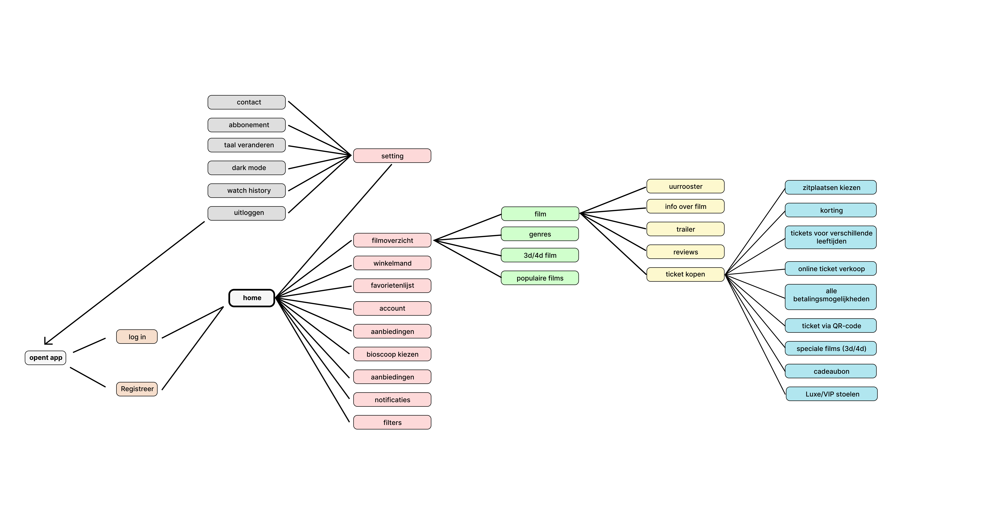
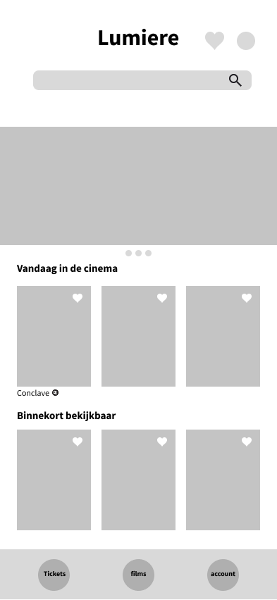
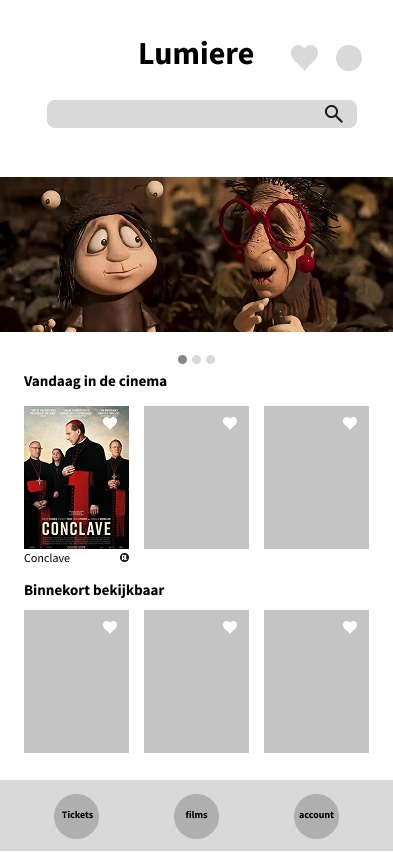

UX/UI Product Design · Lab
Lumière.
Een eenvoudiger pad van film ontdekken naar een avond plannen.
Een individueel appconcept voor Lumière, ontworpen om films, tickets en persoonlijke voorkeuren op een heldere manier samen te brengen.
Open het Figma-prototype
Het project
Een app die mensen echt zouden gebruiken.
Voor het vak Lab kreeg ik de opdracht om individueel een app voor Lumière te ontwerpen. Omdat Lumière geen eigen app heeft, werkte ik een zelfstandig concept uit. Bezoekers zouden daarin films kunnen ontdekken, tickets kiezen en via een account voorkeuren zoals hun locatie bewaren.
- Context
- Individuele schoolopdracht · Lab
- Rol
- UX/UI Product Designer
- Aanpak
- Onderzoek, flows, wireframes, prototype en gebruikerstest
De ontwerpvraag
Hoe maak je kiezen eenvoudiger zonder de mogelijkheden te verliezen?
Een cinema-app moet informatie over films en planning bieden, maar de keuze voor een film mag niet overweldigend worden. Die spanning tussen mogelijkheden en overzicht bepaalde de richting van het ontwerp.
01 / Structuur
Eerst de routes, dan de schermen.
Ik bracht mogelijke stappen en functies in kaart: van een film vinden tot informatie bekijken en tickets kiezen. De flowchart toont hoe breed het concept aanvankelijk was en gaf een basis om de interface te ordenen.

02 / Uitwerking
Van structuur naar een herkenbare interface.
Het homescherm ontwikkelde zich van een eenvoudige indeling naar een visueel uitgewerkt ontwerp. De drie versies laten zien hoe inhoud, beeld en navigatie hun plaats kregen.


03 / Gebruikertest
Een film kiezen moet eenvoudig blijven.
Uit de gebruikerstest kwam naar voren dat te veel opties of een druk scherm mensen kunnen verwarren wanneer ze een film kiezen. Dat inzicht maakte eenvoud en duidelijke keuzes belangrijk in de beoordeling van het ontwerp.
Het resultaat
Een interactief concept om verder te verkennen.
Het resultaat is een uitgewerkt homescherm en een interactief Figma-prototype van het bredere appconcept. Het project leerde me om functies steeds af te wegen tegen de eenvoud van de ervaring.
Open het Figma-prototype